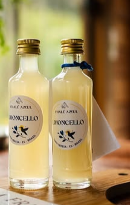
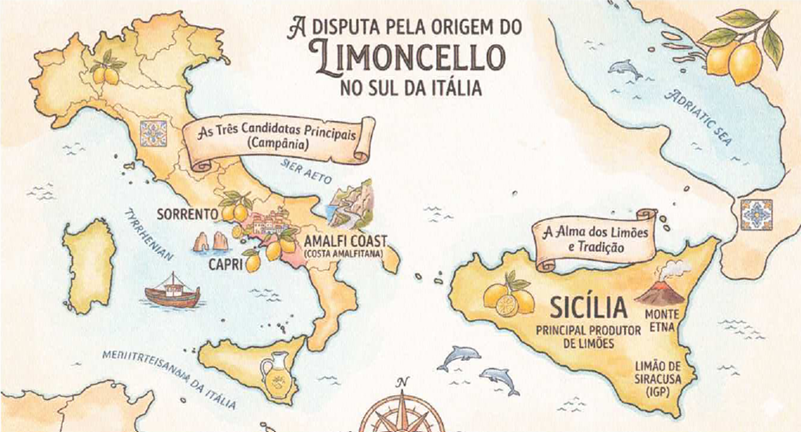

De onde vem o Limoncello?

Limoncello é quase "SOL ENGARRAFADO", e a história dele é temperada com um pouco de folclore e muita tradição mediterranea. O limoncello é o resuitado da maceração de cascas de limão em alcool puro, misturado a um xarope de aglicar. Sua alma reside na qualidade do fruto. Na Sicilia, ele representa a conexão entre a terra vulcanica fértil e a hospitalidade milenar do povo siciliano.
História, Tradição e a Alma da Sicilia
O limoncello é o licor de limão mais famoso do mundo, simbolo da hospitalidade italiana e das paisagens ensolaradas do sul da Itália. Embora sua origem exata seja motivo de disputas entre diferentes regiões, sua identidade está intrincecamente ligada ao território e ao cliima do Mediterrâneo.
Lenda ou Realidade?
A história do limoncello é cercada de mistérios, com três regões principais reivindicando sua "partenidade": Sorrento, Amalfi e Capri.
- A Lenda de Capri: Muito acreditam que a receita nasceu no início do século XX, em uma pequena pensão na Ilha de Capri, onde a proprietária, Maria Antonia Farace, cultivava um jardim de limões e laranjas. Seu neto abriu um bar após a Segunda Guerra e popularizou a receita da sua vó.
- A Tradição Monástica: Outras vertentes sugerem que o licor era produzido em conventos desde a idade média, usado pelos monges como tônico entre as suas orações.
- O Uso De Pescadores: Diz-se também que os pescadores e camponeses bebiam um pouco de licor pela manhã para combater o frio, muito antes dele se tornar um produto comercial.
Mapa da Disputa de Origem do Limoncello
O limoncello é um produto típico do Sul da Itália (Mezzogiorno), e a "guerra" pela sua paternidade ocorre principalmente na região da Campânia, com a Sicília por fora como a principal fornecedora de ingrediente estelar.

A Explosão Global: O Efeito Hollywood e Danny Devito
Até a década de 80, o limoncello era algo "caseiro", feito por avós para a família. A virada de chave aconteceu nos anos 90, mas um momento bizarro e icônico em 2006 o colocou no mapa mundial:
- O Episódio de Danny Devito: O ator apareceu visivelmente embriagado no programa "The View" após uma noite de festa com George Clooney. Ele adimitiu: "Eu sabia que não deveria ter tomado aqueles últimos sete limoncellos".
- A Sacada de Mestre: Em vez de se envergonhar, Devito aproveitou a publicidade e lançou a própria marca, a Danny Devito's premium Limoncello. Isso Transformou a bebida em um acesório "cool" em Hollywood.